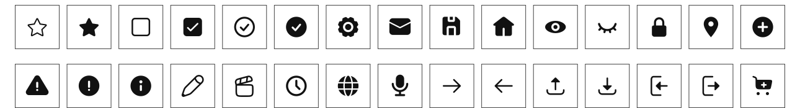
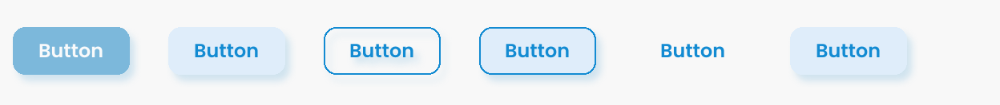
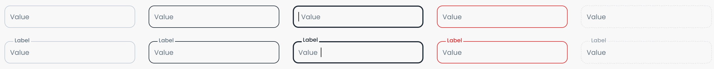
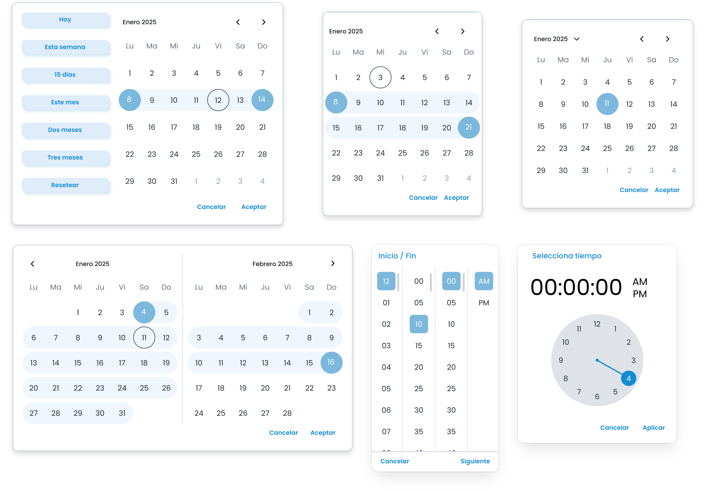
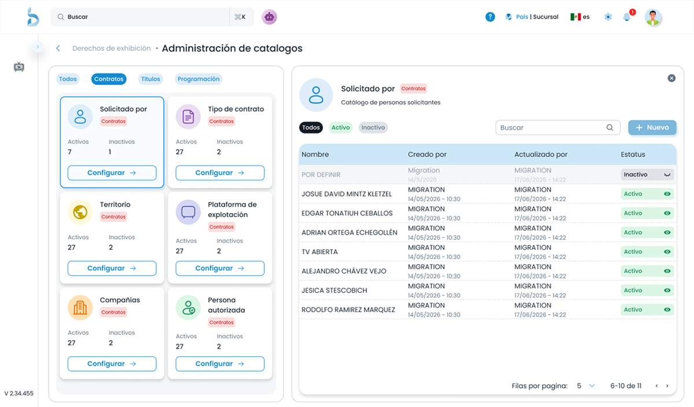
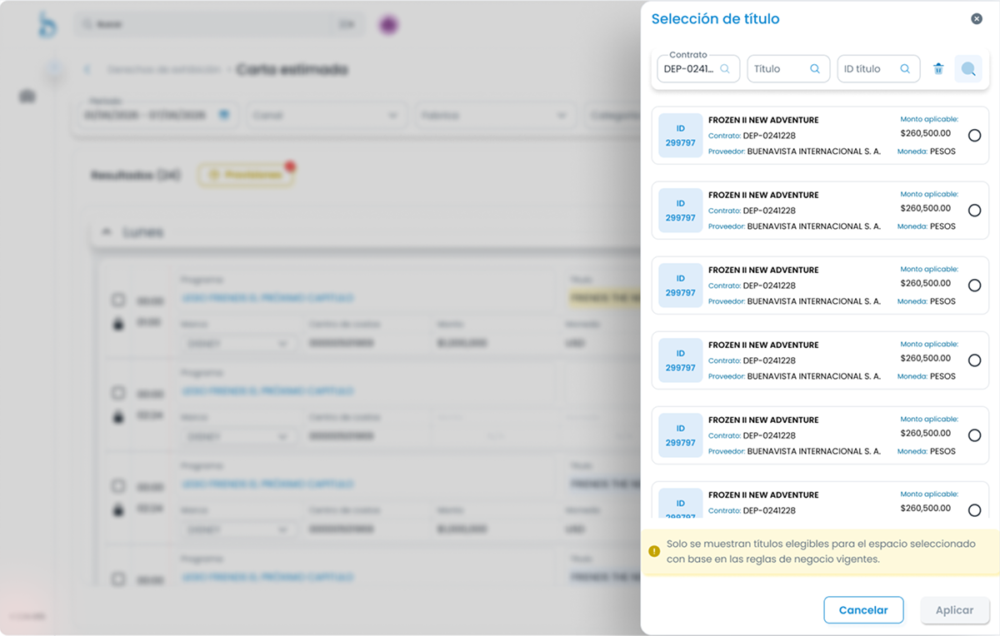
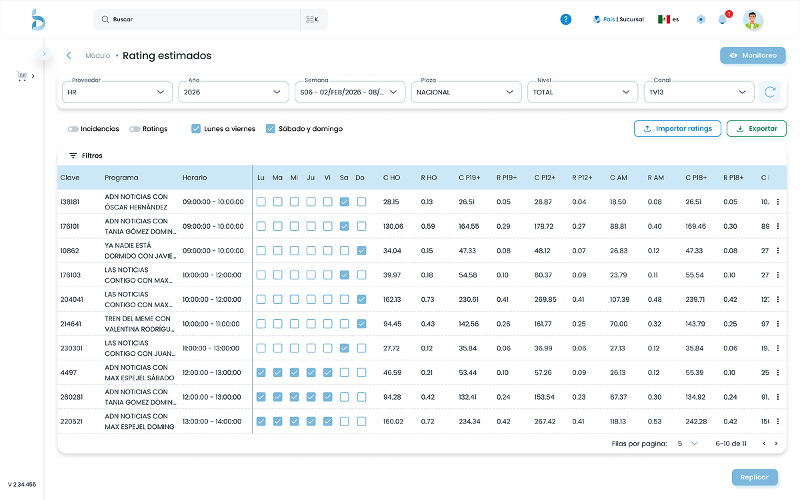
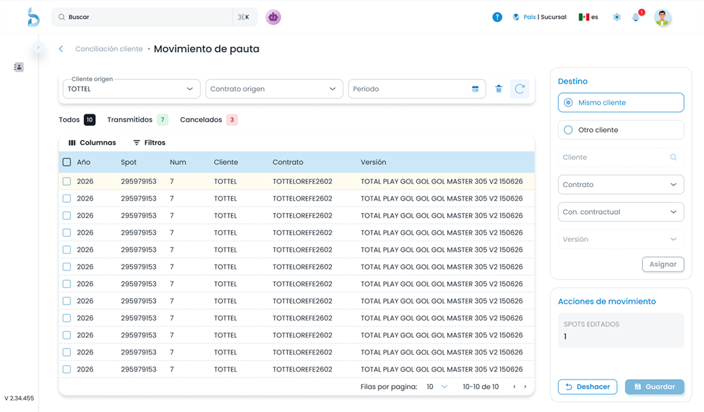
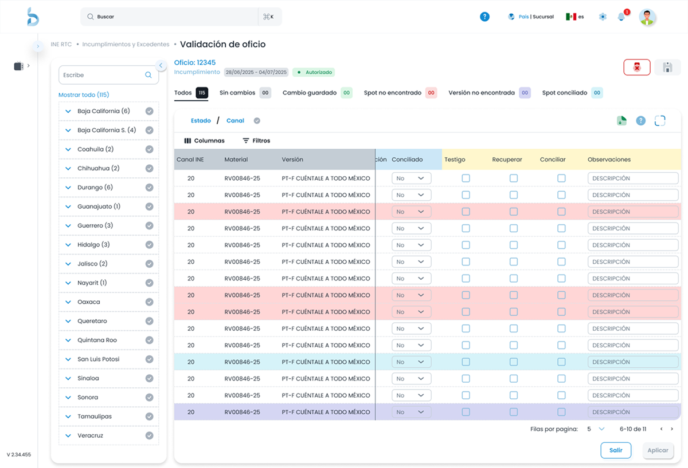

Cómo construimos una base de diseño escalable para un producto SaaS: de plantilla heredada a sistema propio, con 64 componentes documentados y 12 dominios homologados.
El producto nació sobre una plantilla minimalista preconstruida, una decisión razonable para una etapa temprana.
Al sumar módulos, los componentes no se adaptaban a flujos complejos, cada módulo resolvía por su cuenta y la interfaz crecía sin un lenguaje compartido. La deuda visual se volvió un problema de velocidad y coherencia: diseño y desarrollo rehacían decisiones ya tomadas en otro módulo.
Este case study documenta el sistema que construimos como equipo, con énfasis en mis dos áreas: iconografía y Date/Time Picker.
Mismos patrones, distintas implementaciones. Cada módulo evolucionaba de forma aislada.
Componentes duplicados que divergían con el tiempo, sin una referencia común.
Desarrollo no contaba con una referencia única y confiable para implementar componentes.
Referencias de productos enterprise con alta densidad de información, para identificar patrones aplicables a nuestro contexto.
Patrones de navegación, jerarquía visual y tratamiento de datos tabulares en sistemas similares.
Inventario de componentes en uso, duplicidades y estados no cubiertos por la plantilla original.
Qué partes adoptar directamente, cuáles adaptar y dónde construir desde cero.
Antes de construir cualquier componente, el equipo estableció los tokens visuales que garantizarían consistencia en todos los módulos.
El azul fue un requerimiento de identidad del cliente. La decisión de diseño fue el tono: se eligió #7CB8DB como Main del primary por su suavidad visual y su buen contraste sobre fondos blancos y en grids de alta densidad. De Lighter a Darker, las variantes cubren estados, fondos, bordes y texto. El secondary violeta se reserva para flujos secundarios sin competir con las acciones principales.
#0176BA#138BD2#7CB8DB#ACCDE1#CCE7F7#EFF6FE#DFEDFA#532459#87438F#BC86C3#E1B8E7#F6E5F9#F5EBF6#FBF6FC#00B8D9#22C55E#FBDA2C#ED2B2B#F9FAFB#F4F6F8#DFE3E8#C4CDD5#919EAB#637381#454F5B#212B36#161C24Poppins como tipografía única del sistema. La escala cubre 14 niveles (H1–H6, Subtitle 1 y 2, Body 1 y 2, Caption, Overline, Input label y Button) con ajustes por breakpoint (desktop, tablet y mobile) para mantener la jerarquía sin sacrificar densidad.
Niveles principales de la escala; el sistema completo documenta 14.
Partí de la librería de íconos de MUI. Mi trabajo fue definir qué ícono usar en cada contexto y garantizar congruencia entre módulos. El criterio: outlined como estándar, y filled donde, según el contexto, ofrece mejor legibilidad o una pantalla más limpia, sobre todo dentro de botones y grids.

La jerarquía de acción se estructura en tres niveles: Fill para acciones primarias, Outlined para secundarias y Text para terciarias.

La decisión más importante del equipo fue el patrón de floating label: el texto vive dentro del input en reposo y sube sobre la línea al hacer focus, de modo que siempre queda visible qué campo se edita.
En el sistema anterior, al empezar a escribir desaparecía el placeholder y era difícil saber qué campo se estaba editando. El floating label resolvió esa ambigüedad en formularios con muchos campos.

Adapté estos componentes a partir de la base de MUI. Su implementación predeterminada no incluía confirmación explícita, lo que permitía cambios accidentales en flujos de captura donde un clic erróneo en una fecha tiene costo.
Agregué acciones explícitas de confirmación y cancelación (Cancelar, Aceptar, Aplicar o Siguiente, según el flujo) para evitar errores de clic al elegir fechas y horas, y adapté los componentes a la identidad visual definida para el sistema.

El sistema no vive en Figma: vive en el producto. Estas pantallas muestran los componentes trabajando juntos bajo las reglas del sistema, y en el siguiente caso lo vemos aplicado a un dominio completo.





Un catálogo único con variantes y estados.
12 homologados y 2 en transición, de un total de 14.
Una fuente única para diseño y desarrollo.
Lo que haría distinto: medir la velocidad de implementación desde el día uno. No tuvimos una línea base, así que el impacto en tiempos no se puede demostrar con datos, y esa es una lección que ya aplico.
Empezamos definiendo componentes y tuvimos que volver a sistematizar las foundations cuando los estilos comenzaron a divergir. La base va antes que los componentes.
Como equipo de diseño y desarrollo observamos que los componentes con mayor adopción no fueron los más elaborados visualmente, sino los mejor documentados. Eso cambió cómo priorizamos la documentación.
No medimos la velocidad de implementación antes del proyecto. Sin línea base, el impacto existe pero no puede defenderse con datos.
El Design System aplicado a un dominio regulatorio de alta complejidad.